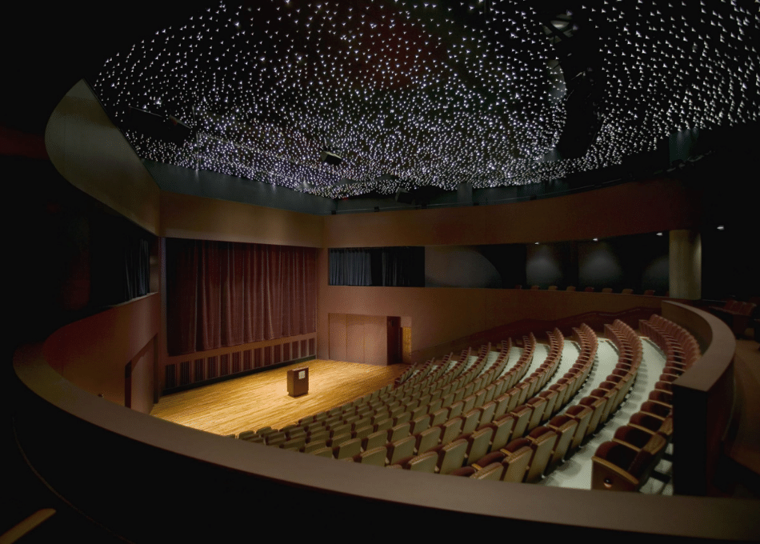
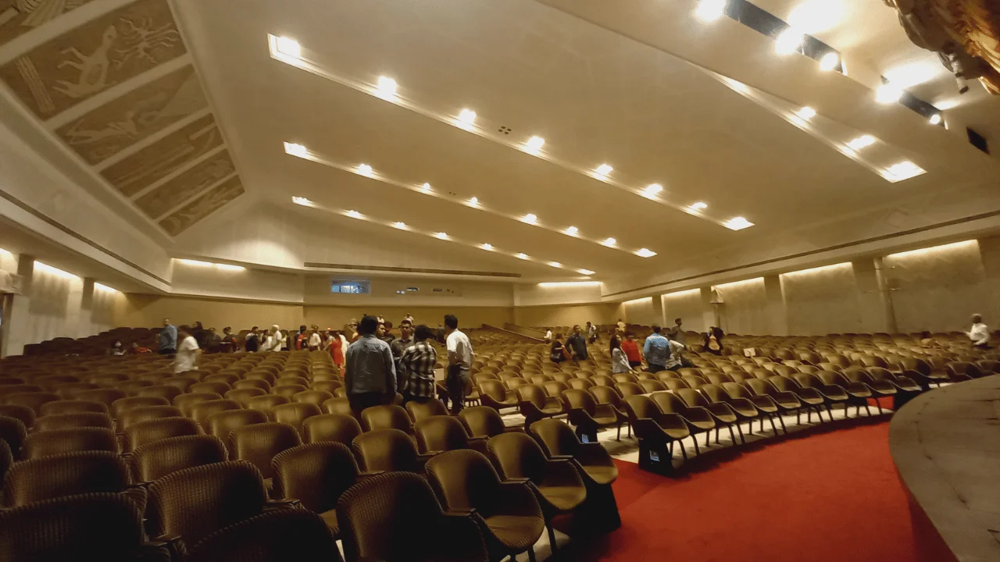
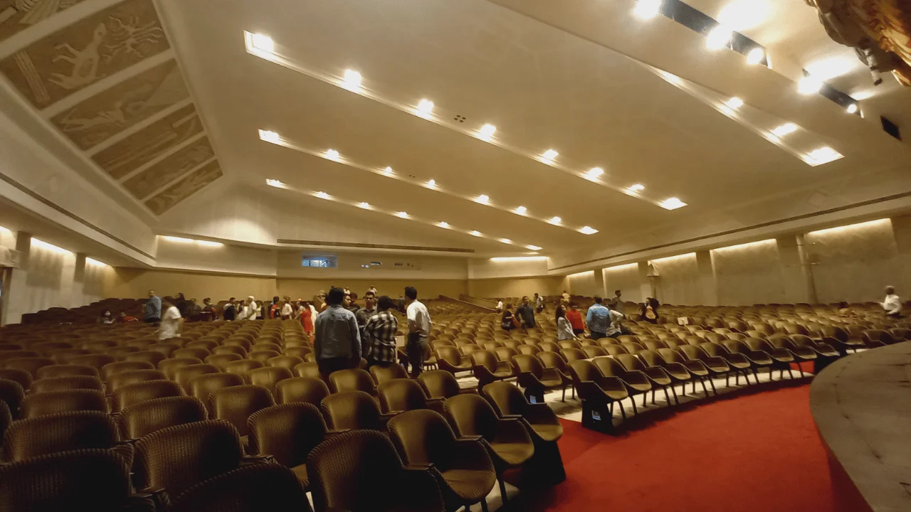
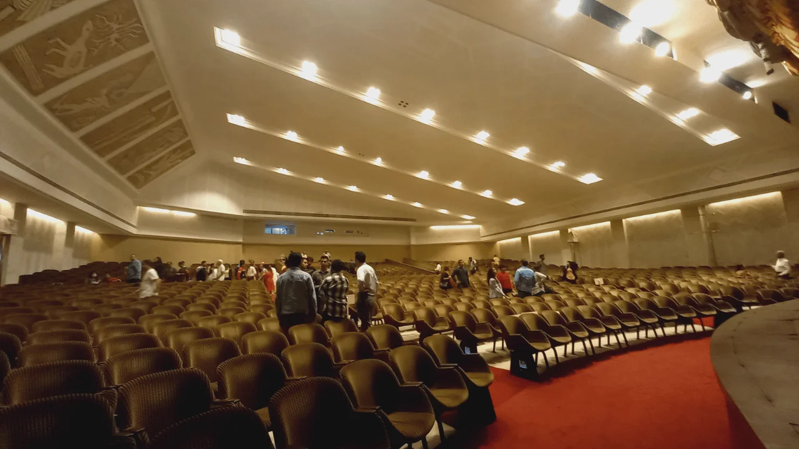

Nehru Planetarium

 



🌌 Introduction
Nehru Planetarium, located in Worli, is a hub of science and astronomy education in Mumbai. It attracts students, science lovers, and tourists with its immersive sky shows and exhibits.
📜 Highlights
- Daily sky shows on stars, planets, and space
- Astronomy quizzes and lectures
- Science exhibitions and telescope viewing events
- Educational displays and models
🕒 Best Time to Visit
- Morning or early afternoon shows
- Weekends for special events
- On International Astronomy Day (May)
🔭 Things to Do
- Watch interactive sky shows in the dome
- Explore space-themed exhibits
- Join a guided astronomy workshop
- View the sun or planets through telescopes